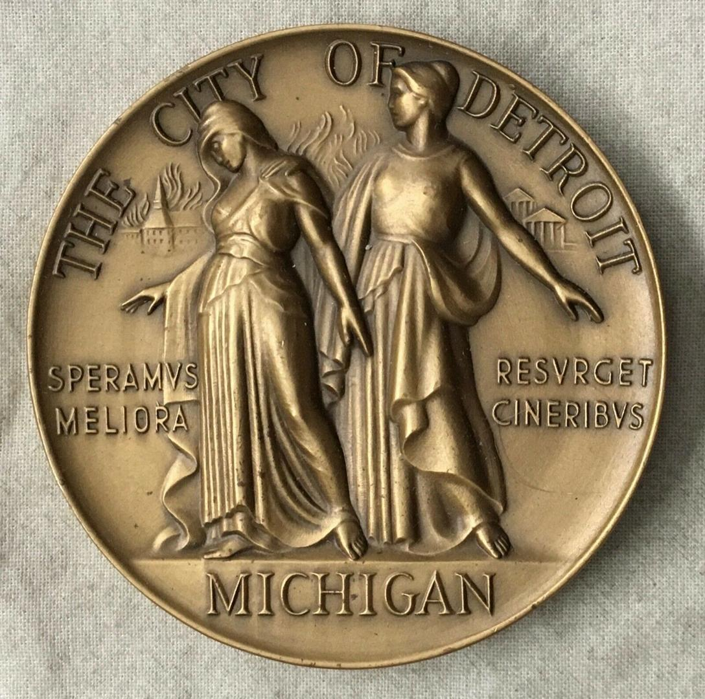
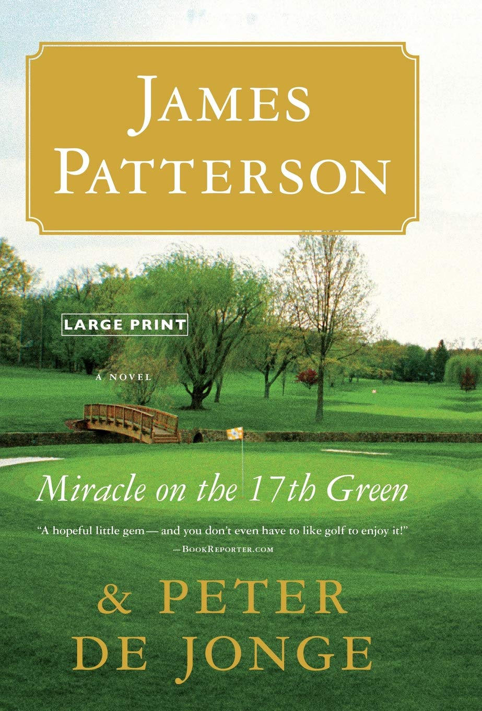

Detroit Times Bestselling Author of Crime & Thriller Novels.
"You can break the mind, but you can't bend the spirit."
Agent: Barry Harry

John Wake was honored with the Detroit Best Seller Award for his gripping crime thrillers that combine suspense, emotion, and unforgettable twists.
"John Wake has a rare ability to combine emotional storytelling with high-stakes suspense. His novels capture the darkness of crime fiction while still delivering deeply human stories that readers remember long after the final page."

An intense crime thriller where a detective must navigate corruption, betrayal, and revenge through a city filled with secrets and danger.
Buy on Amazon"Absolutely gripping from start to finish! Every twist kept me on edge."
"The author looks just like my cousin, so I give this book a 5/5 stars!"
"It gave me hair again!"